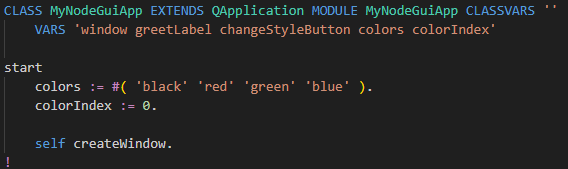
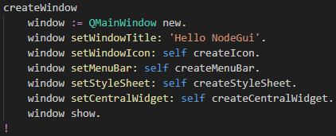

Now back to the file
src/Node/MyNodeGuiApp.st in VSCode:

The app runs in a Node.js environment, meaning it can use all Node.js APIs.
The ST app is started by the code in
/src/main.ts , as usual.
Notice that
MyNodeGuiApp inherits from
QApplication.
NodeGui classes are prefixed with "Q" and mirror class names form the Qt C++ library.
Instance variable
window will refer to the main window.
Method
start starts the app, mainly by creating the main window.
Scroll down to the method
createWindow that looks like this:

This method creates the main app windows as a
QMainWindow .
Then it sets the title, icon and menu bar.
Next a CSS style sheet is loaded for the main view (central widget).
Lastly the window created is shown.